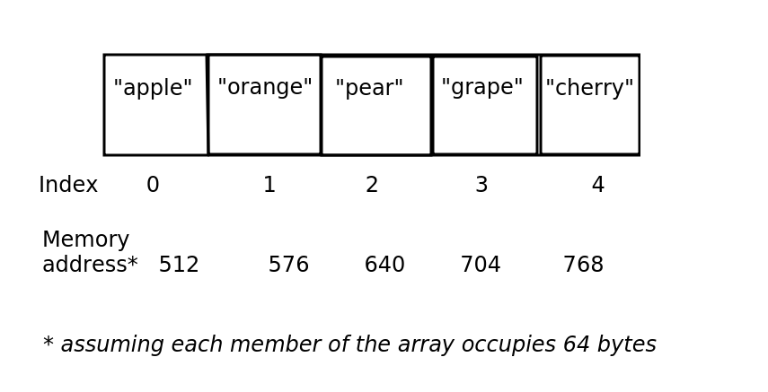
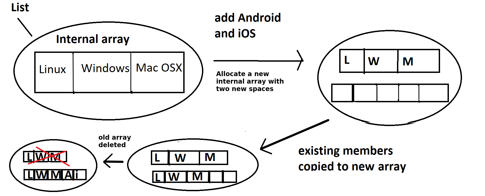

This week we will be looking at some basic data structures, the array, the linked list and the stack, and looking at their relevance. We will also start some very basic Python programming using arrays.
First of all, what is a data structure and why is it important? When it comes to programming, we frequently need to deal with collections of data. For example, we might write a program to manage student records. This program would need to deal with not just one student, but many students. Similarly, you might want to write a program for a live music venue, to allow the venue to store concerts and allow users to book tickets. Again, such a program would have to deal with many concerts and many users.
To store multiple items in a computer program, we need to choose an appropriate data structure. A data structure is a programming construct which allows us to store multiple items. When dealing with data structures, an important thing to consider is which is the most appropriate data structure for the problem we are trying to solve? Certain data structures are more suited to specific types of problem, and we will be looking at this through the module.
Let's start with the most basic data structure of all, the array. An array is a data structure which can hold more than one item of data, and can be thought of as a series of "boxes" which can hold data. With an array, the key thing is that each box is adjacent to its neighbours in memory which has some consequences in terms of efficiency which we will consider as we go on
The diagram below shows an example of an array which holds the names of five items of fruit.

The things to note here are:
Arrays have indices. An index is a number which represents the position of an item in an array. In most programming languages, including Python, indices begin with zero. So the first item in the array has the index zero.
The items in an array are stored continuously in the computer's memory and each item in the array uses the same amount of memory. Here we assume that each item uses 64 bytes, so that the first item is stored at memory address 512, the second at memory address 576 and so on. This has some important consequences for performance of arrays versus other data structures, to be considered later.
Arrays do have some disadvantages. Their simplicity makes them easy to work with but this simplicity can lead to limitations.
Imagine we have an array storing company employees, as shown in the diagram below. (Just the initials of the employees are shown).
Let's say, though, the company takes on an 11th employee, "Ulysses Vernon" (UV). Do we have space in the array to fit this 11th employee? No, we don't, because an array has fixed size!
So what happens if the company expands and takes on more employees? What could we do?

Note that this section is not necessary if you are studying this module over the summer, as you should be comfortable with this as you have already completed COM411. If you are on the summer instance, we will skip this section.
You are being introduced to Python programming on another module, COM411. In this section, however, wewill explore how to create and index a simple array like data structure in Python. Note that Python comes with a range of different data structures to represent collections of data. The default is the list, which is a flexible language component able to be used not just as an array but as various other data structures. However, here, we will treat the list as if it was an array.
If you have had your first COM411 class already, you will have been introduced to Repl and should have an account. If not, here is a quick introduction. Repl is an online environment which allows you to program without setting up software on your own computer.
You can login to Repl using either a Repl account or your GitHub account. You may well already have a GitHub account, if not, you will find it useful throughout your time at university and also when coding in general. GitHub is a collaborative platform for developing projects which allows you to version-control your code, in other words you can commit your code every time you reach a certain stage, and then "roll back" to previous commits if you are unhappy with new code. You will learn more about GitHub, and the Git version-control system, on other modules, but for now, simply create an account on GitHub.
Once you have created a Repl account or GitHub account, you can log in with it on Repl. If you have created a simple "hello world" project already in COM411 you do not need to do anything else. If not, test that it all works by creating a new project.

If you select the menu icon on the top left, you can select "New Repl". A Repl is a project - essentially, a single program. The idea is that you create a new Repl for each program you are going to write. You can then go back and view your previous Repls to load the code.

Once you have done this, just enter the following Python code:
print("Hello World!")
Run the code and you should see the output appear in the console to the right:
Hello World!

As we saw above, the advantage of using an array is that it is very fast to index an array. This is because arrays are always sequentially stored in memory, so that in the example above, "Linux", "Windows" and "Mac OS X" will be stored adjacent to each other in memory.
When indexing an array, the computer is able to work out where in memory the data is stored, because each member of an array uses up the same number of bytes. The equation is simply:
Address = Start Address + Index * Size Of One Member
So imagine, for example, that each member of an array uses up 32 bytes, and the start of the array is at memory location 24576. It's an easy calculation to work out where the member with the index of 3 is located. If we substitute the values into the equation we get:
Address = 24576 + 3 * 32
which is 24576 + 96, which is 24672.
We ourselves do not need to do this calculation. The computer does it. But we can see, because it's simple arithmetic, the computer is able to do it very quickly. So, arrays are optimised for fast look-up of data using a numerical index.
We have seen already that they are not so flexible if we need to add more data later. When we create an array, we have to either list all the data we want to store in the array, or alternatively specify its size. We cannot then add additional members onto the end of the array.
If we wanted to add additional members onto an array, we would have to:

What if we wanted to add a new member at a specific position in the array? For example, imagine we had an array of contacts that we wished to keep in alphabetical order, e.g:
Alex Acland
Bonnie Black
Charley Chase
Earl Edwards
Frances Freeman
Imagine we had a new name, Danielle Dawson which we wanted to insert between Charley Chase and Earl Edwards in the array above. What we would have to do is:

Clearly this is inefficient as we have to create a new array, which is expensive in memory usage, as we have to have the old and new arrays in memory at the same time.
We have seen, through the exercise above, the limitations of the basic array. Consequently, there are a whole range of more flexible and specialised data structures which we can use for particular scenarios.
In fact Python uses one such data structure, the list. A list can act, amongst other things, as an extensible array, which does not have a fixed initial size; you can add additional items of data to the end of the list, and keep doing so until the computer runs out of memory. However, because the list is implemented internally using an array, this may require creation of a new array with additional space to hold the new elements.
(The Python list does however include some optimisations to improve the efficiency of append and insertion operations. For instance, more memory is allocated for the internal array than is needed, meaning that a new internal array need not be created if only a small number of items are added as there will be spare space at the end of the array to hold them. See here for details.)
Other languages have similar "extensible array" data structures, for instance C++ has the vector and Java has the ArrayList.
We will start with a look at linked lists. Linked lists are unlike arrays in that they are not stored continuously in memory Instead, data is stored as a series of linked nodes. Each node contains one item of data, and links to the memory locations of the previous and the next item of data in the linked list.

Each node has a link to the previous and the following node. When we add a new item of data, we make the previous node link to the new node, and we link the new node back to the previous node to form a two-way link.
The first node in the list links to nothing in the reverse direction (indicated in Python by the special value None) and similarly, the final node in the list links to nothing in the forward direction.
What are the consequences of this? We will examine this by considering the three scenarios we looked at for arrays:
A stack data structure involves adding items from bottom to top, rather like a stack of plates. When we remove items from the stack, we remove from the top, again just like a stack of plates. The stack is known as a "last in first out" or "LIFO" data structure. It is called this, because the last things we add to the stack, are the first things we remove. Here is an example of a simple stack of numbers.

A stack can be used for any operation in which we need to navigate back to a previous state. Examples could include:
Browser navigation. When we visit a website, we often need to navigate back to a previous site. When we click the 'Back' button, we want to return to the site immediately preceding the one we are currently viewing. So when you click 'Back', the current site might be removed from the stack so that you return to the previous site.
Directory/folder structure. When navigating the folder system of your computer, you typically start at a 'root' folder (for example C:\ on Windows, or your home directory on Linux) and then navigate to subfolders, for example C:\Pictures. You then might navigate to a sub-sub-folder, such as C:\Pictures\Holiday and then C:\Pictures\Holiday\2018 and so on. In a subfolder you can navigate upwards to the previous folder, so that if you are in C:\Pictures\Holiday and you navigate upwards, you arrive at C:\Pictures and then C:\ if you navigate upwards once more. So the process of navigating upwards removes the current folder from the stack and returns to the previous folder.
"Undo" commands in desktop applications. Each action you take in a desktop application might be stored on a stack, so that if you select "Undo", the topmost operation would be reversed, and then removed from the stack.
(In actual fact, each of these is now implemented in a slightly more complex way, in the sense that you can, in modern browsers, move both back and forwards along your history, but we are assuming a more simplified implementation in which you can only move back for the purposes of illustrating a stack).
Another use of stacks, which you will appreciate more when you have done more programming, is:
The two key operations of a stack, adding and removing items, have special terms.
Push. To push an item onto a stack means to add it to the top. It is possible the stack may only have a certain capacity, i.e. it can only hold a certain number of items (perhaps due to memory constraints) in which case an error occurs if the stack is full.
Pop. To pop an item off the stack means to remove it from the top. The item is removed, and we also obtain it as a result of the pop operation. If the stack is empty, an error is generated.
An additional operation is:
You are writing a program to store employees for a company. It's a small company, with only 10 employees. Try drawing, on paper, an array containing these 10 employees. Draw each name in each position in the array, similar to the diagram above containing an array of fruit.
John Stevenson
Jane Smith
Tim Wilson
Kate Stevenson
Kate Palmer
Tom Eastman
Laura Green
Mike Watson
Sally Black
Mark Ramsey
Answer these questions:
What would be the index of "Kate Stevenson" in this array? What about "Mike Watson"?
If each item in the array needs 80 bytes of memory, and the start of the array is at memory location 1600, what is the memory address of the array item storing Kate Stevenson?
operating_systems = ["Linux", "Windows", "Mac OS X"]
print(operating_systems[0])
Note a couple of things:
[] and pass in a sequence of values - the values which we want to store in the array. There are other ways of creating an array, but for now we will focus on this method.operating_systems[0]. This is using an array index - remember we discussed array indices above. Specifically this code is retrieving the member of the array with index zero.Try running this code but before you do so, try to predict what will be displayed.
Once you have done so, extend your code so that "Mac OS X" is displayed (by indexing the array).
Now, imagine you want to add two more entries to the array, "Android" and "iOS". Before trying it, do you think this would work?
operating_systems[3] = "Android"
operating_systems[4] = "iOS"
Now run it. Do you get the result that you expected? See how this illustrates an issue with arrays: they are not resizable.
Do this exercise on paper. This is a similar example to that given in the lecture, and is designed to illustrate the problems with adding new data to an array.
Think about what you would have to do to search for a particular item in a linked list using its index, starting at the beginning.
Draw out a linked list containing the 5 items of data:
- Linux
- Windows
- Mac OS X
- Android
- iOS
Imagine we wish to retrieve the item with index 3 (Android). How could we do this? Draw out how you think it could be done on paper, and ask yourself: how efficient is this, particularly compared to doing the same thing with an array.
Remember with an array, that we had problems if we wanted to add new data to the array. We had to create a brand new array with more space, and copy the old data into the new array before adding the new data. Think about doing the same thing with a linked list. On paper, draw a linked list containing the elements
- Linux
- Windows
- Mac OS X
Now try and add new element "Android" to the end of the linked list. What do you have to do?
We are now going to perform another paper-based exercise with stacks, to help you understand them and their operations.
Imagine you have an empty stack. Draw the stack after each operation below, and explain what, if anything is returned from each operation and any errors that might occur.
push (a), push (b), pop (), push (c), peek (), pop (), pop (), pop (), push (d), push (e), push (f), pop (), push (g), push (h), peek (), push (i), pop (), pop (), pop (), peek ().
Return to your linked list exercise (exercise 4, above). Think about adding a member into the middle of the list. Remember the ordered list of names:
On paper Draw these as a linked list. Now try to add Danielle Dawson at the appropriate
place between Charley Chase and Earl Edwards. What operations need to be
done now? Do you think this would be more or less efficient than using an array?
Next time we will look at how we can actually implement these data structures in Python. To prepare for this, try doing a bit of reading on Classes and Objects in Python.